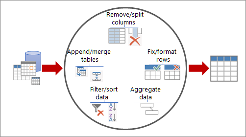

En el Instituto Técnico Superior Centro de Investigación y Capacitación Paraguay (CICAPY), nos especializamos en ofrecer
educación virtual de alta calidad. Nuestro enfoque está en tecnologías modernas para el análisis de datos,
potenciando tus habilidades para enfrentar los desafíos del mundo profesional.
CICAPY fue creado por la Resolución 848/2022 del
Ministerio de Educación y Ciencias, consolidando nuestro compromiso con la educación de excelencia
en Paraguay.
Misión
Formar profesionales altamente capacitados mediante programas educativos virtuales innovadores en tecnologías
de análisis de datos, promoviendo la transformación digital y la toma de decisiones basada en datos en Paraguay
y más allá.
Visión
Ser reconocidos como un referente regional en educación virtual, transformando el aprendizaje en análisis de
datos y contribuyendo al desarrollo tecnológico y profesional de nuestros estudiantes.
📊 Capacitación empresarial a medida: online, in-company o híbrida.
Ofrecemos programas de formación diseñados para equipos que buscan potenciar sus capacidades en Análisis de Datos e Inteligencia de Negocios mediante el uso de herramientas líderes del mercado:
R, Python, Power BI, SQL y Excel. Las capacitaciones pueden realizarse 100% online o in-company, adaptadas a las necesidades específicas de tu organización.
📌 Programas personalizados según el sector y los datos reales de tu empresa.
🧠 Formación práctica, enfocada en el análisis de datos, automatización de reportes y generación de dashboards.
🎯 Modalidad online en vivo o presencial en tu oficina (in-company).
📁 Material de clase, datasets y grabaciones disponibles para los participantes.
✅ Ideal para equipos de análisis, finanzas, marketing, RRHH, operaciones y más.
👨🏫 Capacitador
Nombre del Docente: Oscar González Frutos
Lic. en: Matemática Estadística FACEN - UNA.
MSc. en: Estadística Aplicada - Universidad de Granada, España (Becal).
Experiencia: Más de 10 años en Análisis de Datos y docencia en SQL, Excel, Power BI, R y Python.
Certificaciones: Certificate in Data Science con R - HarvardX (Harvard University - En Línea).
Pasión por enseñar: Comprometido en ayudarte a dominar habilidades clave y aplicarlas en proyectos reales.
Experiencia docente: Ha impartido capacitaciones en herramientas de análisis de datos en instituciones públicas como el BCP, Itaipú, DGEEC, MEC, FACEN, UNA, Ministerio de Desarrollo Social; y en empresas privadas como Automotor, Banco Familiar, Bancoop y Sueñolar.
Análisis de Datos Modernos con EXCEL: Power Query y Power Pivot
Este curso está diseñado para adaptarse a tus necesidades. Se ofrece en modalidad sincrónica y asincrónica,
lo que te permite participar en las clases en vivo o seguir las grabaciones a tu propio ritmo.
Además, podrás completar las tareas y ejercicios cuando más te convenga.
Este curso está diseñado para capacitarte en el uso avanzado de Excel, incluyendo herramientas como Power Query y Power Pivot, para el análisis y la visualización de datos. Aprenderás a importar datos desde múltiples fuentes, transformarlos, modelarlos y crear informes dinámicos y dashboards interactivos.
✅ Metodología
Clases en vivo a través de Zoom, facilitando la interacción directa con el instructor.
Clases grabadas disponibles para consulta posterior.
Actividades prácticas: Ejercicios y proyectos aplicados.
Asesoramiento personalizado durante y después de las sesiones.
📅 Fecha de Capacitación en Vivo:
Fechas: mayo a junio de 2025.
Horario: 19:30 a 21:40 hs.
✅ Costo del Curso
Costo del Curso: 300.000 Gs (Pago Único). Incluye materiales, grabaciones y certificado.
🎉 ¡Descuento para grupos! Si te inscribes en grupo, obtén un descuento especial. ¡Contáctanos para más información!
2 personas: 250.000 Gs c/u
3 personas: 200.000 Gs c/u
4 o más: 150.000 Gs c/u
✅ Inscripción
Completá el formulario y reservá tu lugar.
✅ Formas de Pago
Transferencia o depósito bancario:
🏦 Banco Itaú:
Cta. N°: 720005407
Titular: Oscar Gonzalez Frutos
CI: 3584172
Alias: 3584172
💳 Pago con Tarjeta de Crédito/Débito:
Podés abonar mediante POS Virtual. Consultá para recibir el enlace de pago.
✅ Para confirmar tu inscripción, por favor envía el comprobante al siguiente número: 0983 352 932
👨🏫 Capacitador
Nombre del Docente: Oscar González Frutos
Lic. en: Matemática Estadística FACEN - UNA.
MSc. en: Estadística Aplicada - Universidad de Granada, España (Becal).
Experiencia: Más de 10 años en Análisis de Datos y docencia en SQL, Excel, Power BI, R y Python.
Certificaciones: Certificate in Data Science con R - HarvardX (Harvard University - En Línea).
Pasión por enseñar: Comprometido en ayudarte a dominar habilidades clave y aplicarlas en proyectos reales.
Experiencia docente: Ha impartido capacitaciones en herramientas de análisis de datos en instituciones públicas como el Banco Central del Paraguay (BCP), Itaipú Binacional, DGEEC, MEC, FACEN, UNA y el Ministerio de Desarrollo Social; y en organizaciones privadas como Automotor, Banco Familiar, Bancoop y Sueñolar.
Parte Introductoria: Funcionalidades Básicas de Excel
Interfaz de Excel: Descripción de las principales pestañas y herramientas, incluyendo la barra de fórmulas y la navegación en hojas de cálculo.
Funciones y Fórmulas Básicas: Uso de funciones como Suma, Promedio, Máximo, Mínimo, referencias absolutas y relativas ($), y fórmulas condicionales como SI, CONTAR.SI, y SUMAR.SI.
Formateo de Datos: Aplicación de estilos de celdas, formatos de números, bordes, filtros y ordenamiento de datos.
Gráficos Básicos: Creación de gráficos de columnas, líneas y circulares, incluyendo ajustes de títulos, ejes y leyendas.
Introducción a Tablas: Creación y manejo de tablas en Excel, aprovechando filtros, estilos y referencias estructuradas.
Power Query

Con Power Query, puede buscar orígenes de datos, realizar conexiones y, a continuación, dar forma a esos datos
(por ejemplo, quitar una columna, cambiar un tipo de datos o combinar tablas) de maneras que se ajusten a sus
necesidades. Después, puede cargar la consulta en Excel para crear gráficos e informes.
Hay cuatro fases principales para usar Power Query:
Conectar: Importe y realice conexiones a datos en la nube, en un servicio o localmente.
Transformar: Dé forma a los datos para satisfacer sus necesidades, mientras que el origen original permanece inalterado.
Combinar: Integre datos desde varios orígenes para obtener una vista única de los datos.
Cargar: Complete la consulta y guárdela en una hoja de cálculo o un modelo de datos.
Tema 1: Introducción y Preparación de Datos con Power Query
Introducción a Power Query y su uso en el análisis de datos.
Importación de datos desde TXT, CSV, Excel y bases de datos.
Transformaciones básicas: limpieza, filtrado y ordenamiento de datos.
Carga de datos procesados a Excel.
Power Pivot
Power Pivot es una herramienta de modelado de datos que permite integrar grandes volúmenes de datos de múltiples
fuentes, establecer relaciones entre ellos y crear cálculos avanzados utilizando DAX (Data Analysis Expressions).
Con Power Pivot, puedes crear modelos de datos robustos y flexibles que mejoran el análisis y la visualización.
Las principales funcionalidades de Power Pivot incluyen:
Integración de Datos: Importa datos de diferentes orígenes y combínalos en un modelo unificado.
Relaciones entre Tablas: Crea relaciones entre múltiples tablas para realizar análisis complejos.
Cálculos Avanzados: Utiliza medidas y columnas calculadas para obtener resultados personalizados con DAX.
Optimización de Modelos: Simplifica y optimiza el modelo para mejorar el rendimiento en análisis y visualizaciones.
Tema 2: Modelado de Datos con Power Pivot
Qué es Power Pivot y cómo usarlo para modelos de datos.
Creación de relaciones entre tablas y jerarquías.
Introducción a DAX: funciones básicas como SUM, AVERAGE y COUNT.
Buenas prácticas para optimizar el modelo de datos.
Tema 3: Cálculos y Análisis Avanzados con DAX
Funciones avanzadas de DAX: CALCULATE, FILTER, ALL.
Optimización del modelo de datos para análisis más complejos.
Tema 4: Visualización y Presentación de Informes
Creación de dashboards en Excel: gráficos avanzados y segmentadores.
Diseño profesional y formateo de informes.
Automatización y actualización automática de datos.
Caso práctico: integración completa del flujo de trabajo.
Ejemplos de Dasboards creados en clase
Curso Completo de Report y Dashboard con Power BI
Este curso de Report y Dashboard con Power BI está diseñado para adaptarse a tus necesidades. Se ofrece en modalidad sincrónica y asincrónica, lo que te permite participar en las clases en vivo o seguir las grabaciones a tu propio ritmo.
¡No importa si eres principiante o ya tienes experiencia! Este curso está diseñado para ayudarte a mejorar tus habilidades de análisis de datos con Power BI.
🎯 ¿A quién va dirigido este curso?
Profesionales de todas las áreas que necesitan analizar y visualizar datos para tomar mejores decisiones.
Analistas, contadores, ingenieros, administradores y personal de recursos humanos, entre otros, que deseen optimizar sus reportes y automatizar procesos de análisis.
Emprendedores y dueños de negocios que quieran entender el comportamiento de su empresa mediante indicadores visuales.
Estudiantes y recién egresados que buscan adquirir una herramienta valiosa para el mercado laboral.
Personas sin experiencia previa en Power BI, pero con conocimientos básicos de Excel y análisis de datos.
✅ Inscripción
Completá el formulario y reservá tu lugar.
📲 ¿Tenés dudas o querés más info?
Escribinos ahora y recibí atención personalizada por WhatsApp.
🎥 Solicitá una primera grabación por WhatsApp para probar la clase sin compromiso.
Clases en vivo por Zoom: 12, 13, 19, 20, 26, 27 de agosto y 2 de setiembre de 2025
Día: Martes y Miércoles
📘 Nivel del Curso: ¡Desde Principiante hasta Avanzado!
Este curso está diseñado para llevarte paso a paso desde cero hasta dominar Power BI a nivel profesional.
No se requieren conocimientos previos, ya que comenzamos con lo más básico y avanzamos gradualmente a técnicas de análisis de datos avanzadas.
🔰 Nivel Principiante: Ideal si nunca trabajaste con Power BI. Aprendé los conceptos fundamentales y familiarizate con el entorno de trabajo.
⚙️ Nivel Intermedio: Transformación y modelado de datos, creación de relaciones, uso de filtros y medidas.
🚀 Nivel Avanzado: DAX avanzado, inteligencia de tiempo, diseño de dashboards interactivos, visuales con IA y publicación en la nube.
📘 Report y Dashboard en Power BI
Aprende a crear reportes y dashboards interactivos con Power BI, desde la importación de datos hasta la visualización avanzada.
🔹 MÓDULO 1: Introducción a Power Query y Power BI
Qué es Power Query y Power BI: Diferencias entre Power Query (transformación de datos) y Power BI (visualización y análisis).
Casos de uso de Power Query en Excel y Power BI: Aplicaciones y herramientas.
Acceso a Power Query desde Power BI: Navegación y acceso directo.
Navegación del entorno de Power BI: Panel de consultas, editor de informes.
🔹 MÓDULO 2: Importar y Conectar Datos en Power Query
Importar datos desde: Archivos Excel, CSV, Bases de datos (SQL Server, Access), Web y APIs, Carpetas (consolidación de archivos).
Opciones de carga: Solo conexión, tabla, y tabla dinámica.
🔹 MÓDULO 3: Transformaciones Básicas en Power Query
Eliminar filas y columnas innecesarias: Suprime datos irrelevantes para simplificar el conjunto y facilitar el análisis.
Cambiar tipos de datos: Establece el tipo correcto (texto, número, fecha, etc.) para evitar errores en cálculos y visualizaciones.
Reordenar y renombrar columnas: Mejora la comprensión del dataset y adapta la estructura a los objetivos del análisis.
Filtrar y ordenar registros: Aplica criterios de selección y ordenamiento para focalizar la información útil.
Limpiar datos: Elimina espacios, caracteres innecesarios o errores comunes que afectan la integridad de los datos.
Reemplazar valores: Sustituye datos erróneos, vacíos o estandariza formatos (como "SÍ"/"NO" → 1/0).
Transformar columnas con funciones: Manipula fechas, textos y números con funciones integradas (como `Text.Upper`, `Date.Year`, etc.).
Tratar errores y valores nulos: Detecta y corrige registros problemáticos para garantizar la consistencia del modelo.
Eliminar duplicados: Conserva únicamente los registros únicos, previniendo sesgos en el análisis posterior.
🔹 MÓDULO 4: Modelado de Datos en Power BI
Creación de relaciones entre tablas: Definición de relaciones uno-a-muchos y muchos-a-uno mediante claves primarias y foráneas.
Normalización de datos: Reducción de redundancia mediante la separación de datos en tablas lógicas bien estructuradas.
Uso de "Hechos" y "Dimensiones": Separación entre tablas de métricas (hechos) y descripciones (dimensiones), base del modelado analítico.
Modelado en estrella (Star Schema): Diseño simple donde una tabla de hechos se conecta directamente a múltiples tablas de dimensiones, ideal para rendimiento y facilidad de uso en Power BI.
Modelado en copo de nieve (Snowflake Schema): Variante del modelo estrella donde las dimensiones están normalizadas, lo que reduce duplicación pero aumenta la complejidad.
Jerarquías personalizadas: Creación de estructuras jerárquicas en dimensiones (por ejemplo: Año → Trimestre → Mes → Día) para facilitar la navegación.
Uso de calendario o tabla de fechas: Implementación de una tabla calendario para permitir análisis temporal correcto con funciones DAX como `YTD`, `MTD`, etc.
Direccionalidad de relaciones y propagación de filtros: Control sobre cómo los filtros afectan distintas tablas del modelo (relaciones simples y bidireccionales).
Modelado eficiente para rendimiento: Prácticas como evitar columnas no usadas, comprimir datos y limitar relaciones innecesarias.
🔹 MÓDULO 5: Transformaciones Avanzadas en Power Query
Combinar consultas (Merge): Une dos tablas por columnas clave, como si hicieras un BUSCARV, pero más potente y visual.
Anexar consultas (Append): Agrega los registros de una tabla debajo de otra, útil para consolidar archivos o meses distintos.
Dividir columnas: Separa datos por delimitadores (coma, espacio, guion) o por número de caracteres.
Pivot y Unpivot: Transforma datos de formato ancho a largo (y viceversa) para análisis más dinámico.
Columnas condicionales: Crea nuevas columnas usando lógica tipo "si esto, entonces aquello", sin escribir fórmulas.
Columnas desde ejemplo: Enseñá a Power Query lo que querés que devuelva con ejemplos manuales, y él genera la fórmula automáticamente.
Anulación de dinamización: Convierte una tabla con encabezados como meses o años en una lista plana con valores más analizables.
Orden personalizado: Ordená columnas con tus propios criterios (por ejemplo, días de la semana en orden correcto).
Transformaciones rápidas con clic derecho: Accedé a funciones como duplicar, extraer, dividir o eliminar desde el menú contextual.
Aplicación de múltiples pasos combinados: Apilá varias transformaciones sin necesidad de editar el código detrás.
🔹 MÓDULO 6: Buenas Prácticas y Optimización
Optimización de consultas: Eliminar pasos innecesarios.
Optimización del modelo en Power BI: Reducción de datos, eliminar columnas no utilizadas.
Desempeño y diagnóstico: Uso del Performance Analyzer en Power BI.
Aplicación de filtros y segmentaciones: Mejorar la interacción.
Medidas DAX para análisis avanzados: Uso de DAX.
Paneles interactivos y dinámicos: Filtros dinámicos y slicers.
Visuales con Inteligencia Artificial: Uso del Árbol de Descomposición (Decomposition Tree) y Factores Clave (Key Influencers).
Q&A con lenguaje natural: Generar visualizaciones preguntando en lenguaje natural con el panel de preguntas.
Copiloto de Power BI (preview): Crear visualizaciones y medidas de forma automatizada con IA generativa.
🔹 MÓDULO 8: Proyecto Final
Cargar datos de diferentes fuentes: Importación desde Excel, CSV, SQL Server y otras fuentes conectadas.
Limpiar y transformar los datos: Uso de Power Query para preparar los datos de forma eficiente.
Crear relaciones entre tablas: Establecer un modelo optimizado utilizando claves y jerarquías.
Diseñar visualizaciones interactivas: Construcción de paneles con gráficos, KPIs, mapas y segmentadores.
Aplicar inteligencia artificial: Incluir visuales de IA como Key Influencers, Decomposition Tree y Copiloto para análisis enriquecido.
Publicar en Power BI Service: Subida del informe al entorno en la nube para compartirlo con usuarios o equipos.
Compartir y colaborar: Configuración de permisos, actualizaciones automáticas y trabajo colaborativo desde la web.
Informes vs Dashboards:
Informes: Archivos .pbix con múltiples páginas y visualizaciones creadas en Power BI Desktop. Son interactivos y editables.
Dashboards: Vistas unificadas de visualizaciones seleccionadas de uno o varios informes, creadas dentro de Power BI Service. Ideales para resúmenes ejecutivos.
💻 Costo del Curso Online
Pago al contado:250.000 Gs (pago único). Incluye materiales, grabaciones y certificado.
🎉 ¡Descuento para grupos! Inscribite con amigos y accedé a precios especiales:
👨👩👧👦 2 personas: 200.000 Gs c/u
👨👩👧👦 3 o más personas: 150.000 Gs c/u
💳 Formas de Pago
Podés realizar el pago mediante alias, transferencia bancaria o tarjeta.
🏦 Ueno Bank (Alias)
Alias: 3584172
Titular: Oscar Gonzalez Frutos
🏦 Banco Itaú (Transferencia)
Cta. N°: 720005407
Titular: Oscar Gonzalez Frutos
CI: 3584172
💳 Tarjeta de Crédito
También podés pagar con tarjeta a través del POS Virtual. Consultanos para recibir tu enlace de pago personalizado. ✔️ Podés abonar en varias cuotas utilizando tarjeta de crédito.
✅ Para confirmar tu inscripción, enviá tu comprobante al WhatsApp: 0983 352 932
✅ Metodología
Clases en vivo a través de Zoom, facilitando la interacción directa con el instructor.
Clases grabadas disponibles para consulta posterior.
Actividades prácticas: Ejercicios y proyectos aplicados.
Asesoramiento personalizado durante y después de las sesiones.
✅ Objetivos del Curso
Al finalizar este curso, los participantes serán capaces de:
🎯 Objetivo general: Aprender a importar, transformar, combinar, y optimizar datos utilizando Power Query y Power BI para crear modelos
de datos eficientes y dashboards interactivos que permitan un
análisis avanzado y visualización efectiva de la información, asegurando una toma de decisiones rápida y precisa a través de
reportes dinámicos y bien estructurados.
👨🏫 Docente
Nombre del Docente: Oscar González Frutos
Lic. en: Matemática Estadística FACEN - UNA.
MSc. en: Estadística Aplicada - Universidad de Granada, España (Becal).
Experiencia: Más de 10 años en Análisis de Datos y docencia en SQL, Excel, Power BI, R y Python.
Certificaciones: Certificate in Data Science con R - HarvardX (Harvard University - En Línea).
Pasión por enseñar: Comprometido en ayudarte a dominar habilidades clave y aplicarlas en proyectos reales.
Experiencia docente: Ha impartido capacitaciones en herramientas de análisis de datos en instituciones públicas como el Banco Central del Paraguay (BCP), Itaipú Binacional, DGEEC, MEC, FACEN, UNA y el Ministerio de Desarrollo Social; y en organizaciones privadas como Automotor, Banco Familiar, Bancoop y Sueñolar.
DAX Aplicado. Análisis de Datos con Power BI y Excel
Este curso avanzado de DAX con Power BI y Excel está diseñado para adaptarse a tus necesidades.
Se ofrece en modalidad sincrónica y asincrónica, lo que te permite participar en las clases en vivo
o acceder a las grabaciones para avanzar a tu propio ritmo. Además, podrás realizar los ejercicios y
actividades prácticas en el horario que mejor se ajuste a tu disponibilidad.
✅ Inscripción
Completá el formulario y reservá tu lugar.
📲 ¿Tenés dudas o querés más info?
Escribinos ahora y recibí atención personalizada por WhatsApp.
Clases en vivo a través de Zoom, facilitando la interacción directa con el instructor.
Clases grabadas disponibles para consulta posterior.
Actividades prácticas: Ejercicios y proyectos aplicados.
Asesoramiento personalizado durante y después de las sesiones.
📅 Fecha de Capacitación en Vivo:
Fechas: 26 de abril, 3, 10 y 17 de mayo de 2025.
Día: Sábados
Horario: 9:00 a 11:30 hs.
💰 Costo del Curso y Descuentos
Costo del Curso: 300.000 Gs (Pago Único). Incluye materiales, grabaciones y certificado.
🎉 ¡Descuento para grupos! Si te inscribís en grupo, obtenés un descuento especial. ¡Contactanos para más información!
2 personas: 250.000 Gs c/u
3 personas o más: 200.000 Gs c/u
✅ Formas de Pago
Transferencia o depósito bancario:
🏦 Banco Itaú:
Cta. N°: 720005407
Titular: Oscar Gonzalez Frutos
CI: 3584172
Alias: 3584172
💳 Pago con Tarjeta de Crédito/Débito:
Podés abonar mediante POS Virtual. Consultá para recibir el enlace de pago.
✅ Para confirmar tu inscripción, por favor envía el comprobante al siguiente número: 0983 352 932
📊Contenido del Curso
🧩 Sesión 1 – Modelado de Datos y Fundamentos Avanzados de DAX
Objetivo: Diseñar un modelo robusto que optimice los análisis de la Empresa SA.
Principios del modelado estrella y buenas prácticas
Relación entre tablas (activa/inactiva) y su impacto en los cálculos
Uso de USERELATIONSHIP, CROSSFILTER, TREATAS
Modelos aplicados a datos de ventas, compras y operaciones
Práctica: construir un modelo representando el flujo de ventas y entregas de Empresa SA
📈 Sesión 2 – Métricas Avanzadas para Análisis de Desempeño
Objetivo: Crear KPIs avanzados que apoyen la toma de decisiones en Empresa SA.
Funciones de cálculo avanzadas: RANKX, DIVIDE, SUMX, VAR
Medidas dinámicas: clientes TOP N, productos estrella, tasas de conversión
Casos específicos: análisis de margen, rentabilidad por línea de producto
Práctica: desarrollar un panel de rendimiento comercial
📆 Sesión 3 – Inteligencia de Tiempo y Contexto en DAX
Objetivo: Aplicar análisis temporales sofisticados para comparativos y tendencias.
Construcción de calendarios y columnas de fecha personalizada
Funciones de inteligencia de tiempo: SAMEPERIODLASTYEAR, DATESMTD, TOTALYTD, DATEADD
Evaluación de contextos con CALCULATE, FILTER, ALL, REMOVEFILTERS
Práctica: comparación YTD/LYTD, ventas acumuladas y rolling averages
⚙️ Sesión 4 – Casos Reales, Optimización y Buenas Prácticas
Objetivo: Aplicar lo aprendido a un caso real de Empresa SA, optimizando el desempeño del modelo.
Análisis de desempeño con Performance Analyzer
Limpieza y optimización de medidas (uso de VAR, simplificación de filtros)
Proyecto final: análisis completo con datos reales/simulados de Empresa SA
Panel financiero
Panel de operaciones/logística
Panel de ventas y forecast
Tips para compartir modelos entre Excel y Power BI
📁 Material Incluido:
Archivos de práctica en Excel y Power BI
Presentaciones en PDF por sesión
Guía rápida de funciones DAX clave
Proyecto final con retroalimentación
Grabación de todas las sesiones en vivo
👨🏫 Capacitador
Nombre del Docente: Oscar González Frutos
Lic. en: Matemática Estadística FACEN - UNA.
MSc. en: Estadística Aplicada - Universidad de Granada, España (Becal).
Experiencia: Más de 10 años en Análisis de Datos y docencia en SQL, Excel, Power BI, R y Python.
Certificaciones: Certificate in Data Science con R - HarvardX (Harvard University - En Línea).
Pasión por enseñar: Comprometido en ayudarte a dominar habilidades clave y aplicarlas en proyectos reales.
Experiencia docente: Ha impartido capacitaciones en herramientas de análisis de datos en instituciones públicas como el Banco Central del Paraguay (BCP), Itaipú Binacional, DGEEC, MEC, FACEN, UNA y el Ministerio de Desarrollo Social; y en organizaciones privadas como Automotor, Banco Familiar, Bancoop y Sueñolar.
Este curso de Dashboard en Power BI está diseñado para adaptarse a tus necesidades. Se ofrece en modalidad sincrónica y asincrónica, lo que te permite participar en las clases en vivo o seguir las grabaciones a tu propio ritmo.
🎯 ¿A quién va dirigido este curso?
Profesionales de todas las áreas que necesitan analizar y visualizar datos para tomar mejores decisiones.
Analistas, contadores, ingenieros, administradores y personal de recursos humanos, entre otros, que deseen optimizar sus reportes y automatizar procesos de análisis.
Emprendedores y dueños de negocios que quieran entender el comportamiento de su empresa mediante indicadores visuales.
Estudiantes y recién egresados que buscan adquirir una herramienta valiosa para el mercado laboral.
Personas sin experiencia previa en Power BI, pero con conocimientos básicos de Excel y análisis de datos.
📊 ¿Querés crear un Dashboard como este?
En este curso aprenderás a construir dashboards interactivos como el que ves aquí: visuales profesionales, dinámicos y orientados a la toma de decisiones.
👉 Haz clic en la imagen para ver e interactuar con el dashboard en Power BI
Pago al contado:150.000 Gs (pago único). Incluye materiales, grabaciones y certificado.
💳 Formas de Pago
Podés realizar el pago mediante alias, transferencia bancaria o tarjeta.
🏦 Ueno Bank (Alias)
Alias: 3584172
Titular: Oscar Gonzalez Frutos
🏦 Banco Itaú (Transferencia)
Cta. N°: 720005407
Titular: Oscar Gonzalez Frutos
CI: 3584172
💳 Tarjeta de Crédito
También podés pagar con tarjeta a través del POS Virtual. Consultanos para recibir tu enlace de pago personalizado. ✔️ Podés abonar en varias cuotas utilizando tarjeta de crédito.
✅ Para confirmar tu inscripción, enviá tu comprobante al WhatsApp: 0983 352 932
📅 Fecha de Capacitación online en Vivo:
Horario: 19:30 a 21:30 hs.
Clases: 17, 18, 21 y 24 de julio de 2025
✅ Metodología
Clases en vivo a través de Zoom, facilitando la interacción directa con el instructor.
Clases grabadas disponibles para consulta posterior.
Actividades prácticas: Ejercicios y proyectos aplicados.
Asesoramiento personalizado durante y después de las sesiones.
📊 Contenido del Curso - Dashboard en Power BI
🟨 Clase 1 - Fundamentos y Conexión de Datos
¿Qué es Power BI?: Introducción breve a la herramienta y sus componentes (Desktop, Service, Mobile).
Flujo de trabajo: Conectar, transformar, modelar, visualizar y compartir.
Power BI Desktop: Vistas, cinta de opciones y entorno.
Conexión a fuentes de datos: Excel, bases de datos, CSV, web, etc.
Uso de Power Query: Limpieza, filtrado y transformación de datos inicial.
🟨 Clase 2 - Modelado de Datos Profesional
Modelado de Datos: Crear relaciones entre tablas, claves primarias y foráneas.
Modelo estrella vs copo de nieve: Cuándo usar cada uno, ventajas y rendimiento.
Optimización: Quitar columnas innecesarias, jerarquías, formatos y propiedades de los campos.
Tablas de calendario: Crear una tabla de fechas y establecer relaciones.
Errores comunes: Resolver problemas de ambigüedad, relaciones múltiples y duplicadas.
🟨 Clase 3 - DAX para Dashboards
Introducción a DAX: Columnas calculadas, medidas y tablas calculadas.
Contexto de fila y filtro: Cómo afectan los resultados.
Medidas útiles: Suma total, promedio dinámico, conteos, porcentaje del total.
Inteligencia de tiempo: Acumulados, año anterior, comparativos temporales.
Buenas prácticas: Nombres claros, comentarios, evitar errores comunes.
🟨 Clase 4 - Creación del Dashboard Final
Visualizaciones: Gráficos más usados (barras, líneas, matriz, tarjetas, mapas).
Segmentadores y paneles de filtros: Crear filtros interactivos.
Diseño visual: Navegación con botones, orden y coherencia visual.
Historias con datos: Marcadores, interacción entre páginas e informes.
Publicación: Subida a Power BI Service, compartir y ver en móvil.
Tutorial de Instalación de Power BI Desktop
Pasos para la instalación:
Power BI Desktop:
Descarga el instalador desde el sitio oficial de Power BI Desktop.
Sigue estos pasos:
Haz clic en "Descargar" y selecciona la versión adecuada para tu sistema operativo.
Ejecuta el instalador y sigue las instrucciones en pantalla.
Abre Power BI Desktop y comienza a explorar sus herramientas de visualización de datos.
Sigue el tutorial:
Para una guía detallada sobre cómo instalar y configurar Power BI Desktop, mira el siguiente video.
👨🏫 Capacitador
Nombre del Docente: Oscar González Frutos
Lic. en: Matemática Estadística FACEN - UNA.
MSc. en: Estadística Aplicada - Universidad de Granada, España (Becal).
Experiencia: Más de 10 años en Análisis de Datos y docencia en SQL, Excel, Power BI, R y Python.
Certificaciones: Certificate in Data Science con R - HarvardX (Harvard University - En Línea).
Pasión por enseñar: Comprometido en ayudarte a dominar habilidades clave y aplicarlas en proyectos reales.
Experiencia docente: Ha impartido capacitaciones en herramientas de análisis de datos en instituciones públicas como el Banco Central del Paraguay (BCP), Itaipú Binacional, DGEEC, MEC, FACEN, UNA y el Ministerio de Desarrollo Social; y en organizaciones privadas como Automotor, Banco Familiar, Bancoop y Sueñolar.
Al completar el curso, recibirás un certificado digital que acredita tus habilidades en Power BI y DAX.
Modelo de Certificado
Ejemplos de Dasboards que aprenderás a crear
Plantillas vacías listas para usar
Este curso avanzado de DAX con Power BI y Excel está diseñado para adaptarse a tus necesidades.
Se ofrece en modalidad sincrónica y asincrónica, lo que te permite participar en las clases en vivo
o acceder a las grabaciones para avanzar a tu propio ritmo. Además, podrás realizar los ejercicios y
actividades prácticas en el horario que mejor se ajuste a tu disponibilidad.
Clases en vivo a través de Zoom, facilitando la interacción directa con el instructor.
Clases grabadas disponibles para consulta posterior.
Actividades prácticas: Ejercicios y proyectos aplicados.
Asesoramiento personalizado durante y después de las sesiones.
📅 Fecha de Capacitación en Vivo:
Fechas: 26 de abril, 3, 10 y 17 de mayo de 2025.
Día: Sábados
Horario: 9:00 a 11:30 hs.
💰 Costo del Curso y Descuentos
Costo del Curso: 300.000 Gs (Pago Único). Incluye materiales, grabaciones y certificado.
🎉 ¡Descuento para grupos! Si te inscribís en grupo, obtenés un descuento especial. ¡Contactanos para más información!
2 personas: 250.000 Gs c/u
3 personas o más: 200.000 Gs c/u
✅ Formas de Pago
Transferencia o depósito bancario:
🏦 Banco Itaú:
Cta. N°: 720005407
Titular: Oscar Gonzalez Frutos
CI: 3584172
Alias: 3584172
💳 Pago con Tarjeta de Crédito/Débito:
Podés abonar mediante POS Virtual. Consultá para recibir el enlace de pago.
✅ Para confirmar tu inscripción, por favor envía el comprobante al siguiente número: 0983 352 932
📊Contenido del Curso
🧩 Sesión 1 – Modelado de Datos y Fundamentos Avanzados de DAX
Objetivo: Diseñar un modelo robusto que optimice los análisis de la Empresa SA.
Principios del modelado estrella y buenas prácticas
Relación entre tablas (activa/inactiva) y su impacto en los cálculos
Uso de USERELATIONSHIP, CROSSFILTER, TREATAS
Modelos aplicados a datos de ventas, compras y operaciones
Práctica: construir un modelo representando el flujo de ventas y entregas de Empresa SA
📈 Sesión 2 – Métricas Avanzadas para Análisis de Desempeño
Objetivo: Crear KPIs avanzados que apoyen la toma de decisiones en Empresa SA.
Funciones de cálculo avanzadas: RANKX, DIVIDE, SUMX, VAR
Medidas dinámicas: clientes TOP N, productos estrella, tasas de conversión
Casos específicos: análisis de margen, rentabilidad por línea de producto
Práctica: desarrollar un panel de rendimiento comercial
📆 Sesión 3 – Inteligencia de Tiempo y Contexto en DAX
Objetivo: Aplicar análisis temporales sofisticados para comparativos y tendencias.
Construcción de calendarios y columnas de fecha personalizada
Funciones de inteligencia de tiempo: SAMEPERIODLASTYEAR, DATESMTD, TOTALYTD, DATEADD
Evaluación de contextos con CALCULATE, FILTER, ALL, REMOVEFILTERS
Práctica: comparación YTD/LYTD, ventas acumuladas y rolling averages
⚙️ Sesión 4 – Casos Reales, Optimización y Buenas Prácticas
Objetivo: Aplicar lo aprendido a un caso real de Empresa SA, optimizando el desempeño del modelo.
Análisis de desempeño con Performance Analyzer
Limpieza y optimización de medidas (uso de VAR, simplificación de filtros)
Proyecto final: análisis completo con datos reales/simulados de Empresa SA
Panel financiero
Panel de operaciones/logística
Panel de ventas y forecast
Tips para compartir modelos entre Excel y Power BI
📁 Material Incluido:
Archivos de práctica en Excel y Power BI
Presentaciones en PDF por sesión
Guía rápida de funciones DAX clave
Proyecto final con retroalimentación
Grabación de todas las sesiones en vivo
👨🏫 Capacitador
Nombre del Docente: Oscar González Frutos
Lic. en: Matemática Estadística FACEN - UNA.
MSc. en: Estadística Aplicada - Universidad de Granada, España (Becal).
Experiencia: Más de 10 años en Análisis de Datos y docencia en SQL, Excel, Power BI, R y Python.
Certificaciones: Certificate in Data Science con R - HarvardX (Harvard University - En Línea).
Pasión por enseñar: Comprometido en ayudarte a dominar habilidades clave y aplicarlas en proyectos reales.
Experiencia docente: Ha impartido capacitaciones en herramientas de análisis de datos en instituciones públicas como el Banco Central del Paraguay (BCP), Itaipú Binacional, DGEEC, MEC, FACEN, UNA y el Ministerio de Desarrollo Social; y en organizaciones privadas como Automotor, Banco Familiar, Bancoop y Sueñolar.
El curso Data Pro: Ciencia de Datos e IA con Python y GitHub está diseñado para que domines el análisis de datos, la inteligencia artificial y el control de versiones.
Aprenderás a trabajar con Python y sus bibliotecas clave para manipular datos, visualizarlos, aplicar modelos estadísticos y de IA, además de publicar tus resultados en la web mediante GitHub Pages.
El curso se imparte en modalidad 100% online en vivo con acceso a grabaciones, adaptándose a tu disponibilidad de tiempo.
Es ideal tanto para quienes inician en la ciencia de datos como para profesionales que desean potenciar sus habilidades en análisis, visualización y automatización de proyectos de datos con Python y GitHub.
¡Construye tu portafolio profesional y destaca en el mundo laboral con Data Pro!
✅ Inscripción
Completá el formulario y reservá tu lugar.
📲 ¿Tenés dudas o querés más info?
Escribinos ahora y recibí atención personalizada por WhatsApp.
Las sesiones en vivo se llevarán a cabo en las siguientes fechas:
16 de agosto de 2025
23 de agosto de 2025
30 de agosto de 2025
03 de setiembre de 2025
Días y Horarios: Sábados de 9.00 a 11.45hs
✅ Costo del Curso
Costo del Curso: 200.000 Gs (Pago Único). Incluye materiales, grabaciones y certificado.
🎉 ¡Descuento para grupos! Si te inscribes en grupo, obtén un descuento especial. ¡Contáctanos para más información!
💳 Formas de Pago
Podés realizar el pago mediante alias, transferencia bancaria o tarjeta.
🏦 Ueno Bank (Alias)
Alias: 3584172
Titular: Oscar Gonzalez Frutos
🏦 Banco Itaú (Transferencia)
Cta. N°: 720005407
Titular: Oscar Gonzalez Frutos
CI: 3584172
💳 Tarjeta de Crédito
También podés pagar con tarjeta a través del POS Virtual. Consultanos para recibir tu enlace de pago personalizado. ✔️ Podés abonar en varias cuotas utilizando tarjeta de crédito.
✅ Para confirmar tu inscripción, enviá tu comprobante al WhatsApp: 0983 352 932
✅ Metodología
Clases en vivo a través de Zoom, facilitando la interacción directa con el instructor.
Clases grabadas disponibles para consulta posterior.
Actividades prácticas: Ejercicios y proyectos aplicados.
Asesoramiento personalizado durante y después de las sesiones.
Módulo 1: Entorno de trabajo y GitHub Copilot
Objetivo: Dejar listo el entorno de ciencia de datos y habilitar IA asistida en el editor.
Instalación: Python 3.11+, VS Code, extensiones Python, Jupyter, GitHub Copilot y Copilot Chat.
Modelos: regresión lineal y logística; árboles y bosques con scikit-learn.
Métricas: RMSE/MAE (regresión), accuracy/precision/recall/F1 y matriz de confusión (clasificación).
Asistencia con IA: usar Copilot/ChatGPT para generar, explicar y documentar pipelines.
Práctica rápida: entrenar un modelo sencillo (regresión o clasificación), evaluar métricas y agregar la sección “Predicción” al sitio de Pages.
👨🏫 Capacitador
Nombre del Docente: Oscar González Frutos
Lic. en: Matemática Estadística FACEN - UNA.
MSc. en: Estadística Aplicada - Universidad de Granada, España (Becal).
Experiencia: Más de 10 años en Análisis de Datos y docencia en SQL, Excel, Power BI, R y Python.
Certificaciones: Certificate in Data Science con R - HarvardX (Harvard University - En Línea).
Pasión por enseñar: Comprometido en ayudarte a dominar habilidades clave y aplicarlas en proyectos reales.
Experiencia docente: Ha impartido capacitaciones en herramientas de análisis de datos en instituciones públicas como el Banco Central del Paraguay (BCP), Itaipú Binacional, DGEEC, MEC, FACEN, UNA y el Ministerio de Desarrollo Social; y en organizaciones privadas como Automotor, Banco Familiar, Bancoop y Sueñolar.
Clases en vivo a través de Zoom, facilitando la interacción directa con el instructor.
Clases grabadas disponibles para consulta posterior.
Actividades prácticas: Ejercicios y proyectos aplicados.
Asesoramiento personalizado durante y después de las sesiones.
✅ Costo del Curso
Costo del Curso: 350.000 Gs (Pago Único). Incluye materiales, grabaciones y certificado.
🎉 ¡Descuento para grupos! Si te inscribes en grupo, obtén un descuento especial. ¡Contáctanos para más información!
2 personas: 250.000 Gs c/u
3 personas o más: 200.000 Gs c/u
Sección 1: Introducción
¿Qué es MySQL?
Importancia de las bases de datos relacionales en el manejo de datos.
Casos de uso de MySQL en la industria.
Diferencias entre MySQL y otros motores de bases de datos.
Sección 2: Descarga e Instalación de MySQL Server
Guía paso a paso para descargar MySQL Server.
Instalación en Windows, Mac y Linux.
Configuración inicial de MySQL Server.
Resolución de errores comunes durante la instalación.
Sección 3: Desarrollo del Entorno de trabajo en MySQL Workbench
Introducción a MySQL Workbench.
Configuración de conexiones a bases de datos.
Navegación por las herramientas principales de MySQL Workbench.
Primeros pasos: Creación de una base de datos simple.
Sección 4: Desarrollo de nuestra Base de Datos, Tablas, Vistas, Procedimientos...
Diseño y creación de bases de datos.
Uso de comandos CREATE DATABASE y CREATE TABLE.
Tipos de datos en MySQL (VARCHAR, INT, DATE, etc.).
Creación de relaciones entre tablas: Claves primarias y foráneas.
Sección 5: Mantenimiento de datos a las tablas de MySQL
Comandos básicos: INSERT, UPDATE, DELETE.
Uso de transacciones para mantener la integridad de los datos.
Exportación e importación de datos en MySQL.
Resolución de conflictos y manejo de errores.
Sección 6: Operadores y Funciones
Operadores aritméticos, de comparación y lógicos.
Funciones de agregación: SUM(), AVG(), COUNT(), etc.
Funciones de texto: CONCAT(), SUBSTRING(), etc.
Funciones de fecha y hora: NOW(), DATE_FORMAT(), etc.
Sección 7: Creación de Vistas
¿Qué son las vistas en MySQL?
Creación y administración de vistas con CREATE VIEW.
Ventajas y limitaciones del uso de vistas.
Ejemplos prácticos de vistas en escenarios reales.
Sección 8: Trabajaremos con mayor detalle la Sentencia SQL SELECT
Uso avanzado de SELECT: Filtrados con WHERE.
Ordenación de resultados con ORDER BY.
Agrupación de datos con GROUP BY.
Subconsultas y combinaciones (JOIN).
Sección 9: Procedimientos Almacenados
Introducción a los procedimientos almacenados.
Creación y ejecución de procedimientos con CREATE PROCEDURE.
Uso de parámetros en procedimientos.
Casos prácticos de automatización de tareas.
Sección 10: Funciones
Diferencia entre funciones y procedimientos almacenados.
Creación de funciones definidas por el usuario.
Ejemplos de funciones personalizadas para cálculos específicos.
Mejores prácticas en el uso de funciones.
Sección 11: Triggers
¿Qué son los triggers en MySQL?
Creación de triggers con CREATE TRIGGER.
Tipos de triggers: BEFORE y AFTER.
Aplicaciones prácticas de triggers en el manejo de datos.
👨🏫 Capacitador
Nombre del Docente: Oscar González Frutos
Lic. en: Matemática Estadística FACEN - UNA.
MSc. en: Estadística Aplicada - Universidad de Granada, España (Becal).
Experiencia: Más de 10 años en Análisis de Datos y docencia en SQL, Excel, Power BI, R y Python.
Certificaciones: Certificate in Data Science con R - HarvardX (Harvard University - En Línea).
Pasión por enseñar: Comprometido en ayudarte a dominar habilidades clave y aplicarlas en proyectos reales.
Experiencia docente: Ha impartido capacitaciones en herramientas de análisis de datos en instituciones públicas como el Banco Central del Paraguay (BCP), Itaipú Binacional, DGEEC, MEC, FACEN, UNA y el Ministerio de Desarrollo Social; y en organizaciones privadas como Automotor, Banco Familiar, Bancoop y Sueñolar.
Descubre momentos destacados de nuestros cursos a través de estos videos. Aprende más sobre nuestra metodología y la experiencia educativa que ofrecemos.
Informes
Ejemplos creados en clase. Explora e interactúa con el informe dinámico para descubrir los datos de una forma práctica y visual.
Informes
Ejemplos creados en clase. Explora e interactúa con el informe dinámico para descubrir los datos de una forma práctica y visual.
Fotos
Explora momentos destacados de nuestros cursos anteriores y conoce más sobre nuestra comunidad educativa.